Головна
Головна
Головна
Головна
Від великих ламп до мікрочипів: вся історія еволюції.
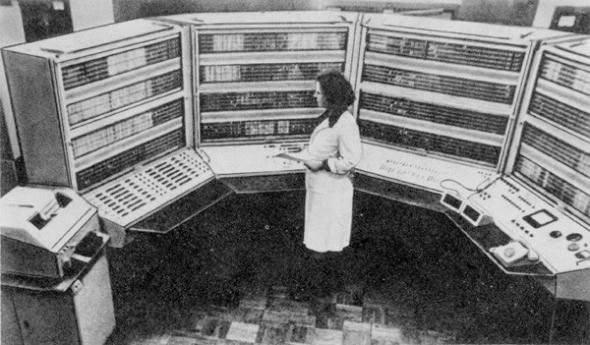
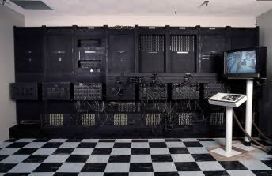


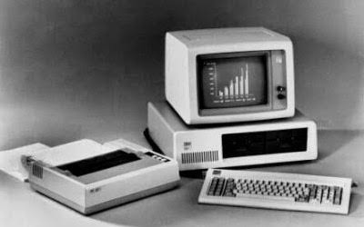

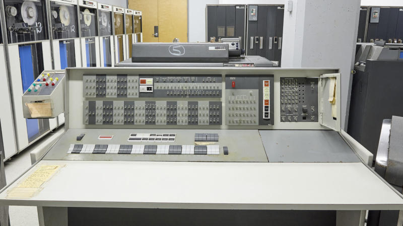
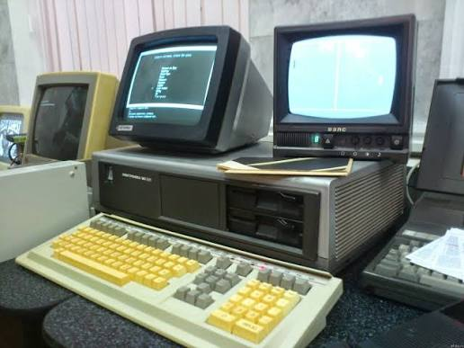
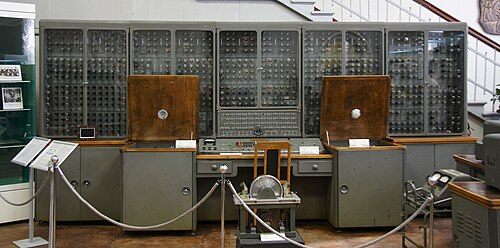

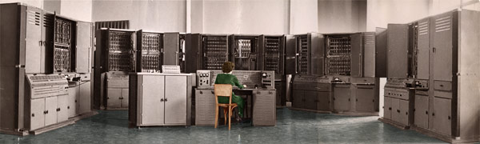
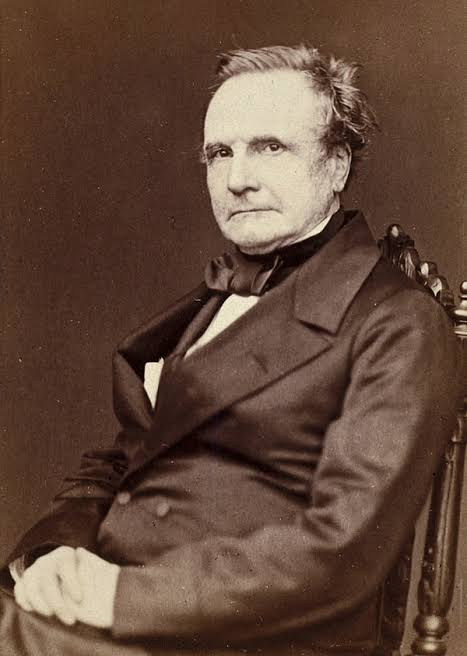

Перша програмістка в історії, описала алгоритми для обчислювальної машини.
Детальніше...

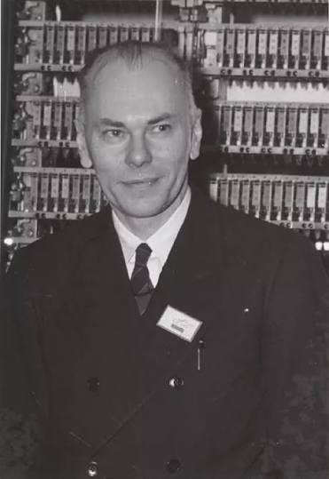
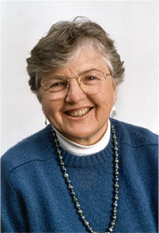
Піонерка оптимізації компіляторів. Перша жінка, яка отримала Turing Award.
Детальніше...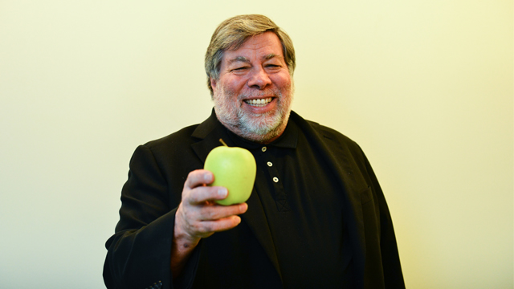
Один із піонерів персональних комп'ютерів. Розробив комп'ютери Apple I та Apple II.
Детальніше...Відіграла ключову роль у створенні мікропроцесорів ARM. Її робота лягла в основу більшості сучасних смартфонів.
Детальніше...